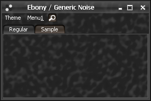
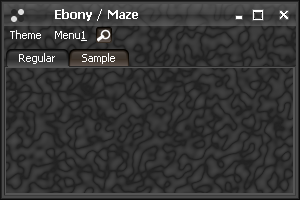
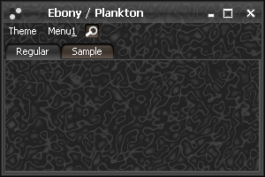
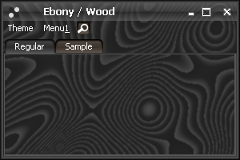
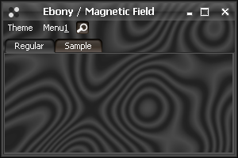
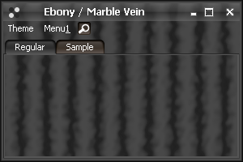
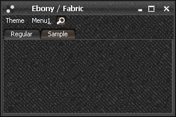
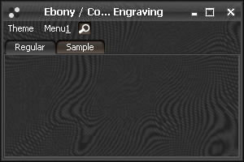

Inexpensive noise generation pioneered by Ken Perlin
has earned him an Oscar award in 1997.
See this page for a
background of Perlin noise generator and transformations that can be applied to the resulting
images in order to imitate various textures such as wood or marble.
In its original form, the 2D Perlin noise looks like this:

Not much to see here, but this is only the beginning. Following an idea similar to that of
SwingX painters (hopefully this will not
aggravate
commercial Swing vendors - read the comments on this entry in Romain's blog), we can apply
a chain of filters on this base noise to create some interesting textures. First, we start with
the base interface for the noide filter:
public interface NoiseFilter {
/**
* Applies filter on the noise at the specified location.
*
* @param x
* X coordinate.
* @param y
* Y coordinate.
* @param z
* Z coordinate.
* @param origValue
* The original noise value.
* @return New noise value.
*/
public double apply(double x, double y, double z, double origValue);
/**
* Kind of trigonometric function.
*
* @author Kirill Grouchnikov
*/
public enum TrigKind {
SINE, COSINE
}
}
Simple implementation would be that of a sharpening filter:
public class SharpenFilter implements NoiseFilter {
/*
* (non-Javadoc)
*
* @see org.jvnet.substance.painter.noise.NoiseFilter#apply(double, double,
* double, double)
*/
public double apply(double x, double y, double z, double origValue) {
return Math.sqrt(origValue);
}
}
Another implementation focuses on the medium values and subdues values around 0 and 1
(effectively doubling the number of original noise features):
public class MedianBeakFilter implements NoiseFilter {
/*
* (non-Javadoc)
*
* @see org.jvnet.substance.painter.noise.NoiseFilter#apply(double, double,
* double, double)
*/
public double apply(double x, double y, double z, double origValue) {
return Math.sqrt(Math.abs(2 * origValue - 1));
}
}
Now we introduce a compound noise filter which is really a chain of simple or compound
filters applied one after another:
public class CompoundNoiseFilter implements NoiseFilter {
/**
* Filter chain.
*/
protected LinkedList<NoiseFilter> chain;
/**
* Creates a new compound filter.
*
* @param chain
* Filter chain.
*/
public CompoundNoiseFilter(NoiseFilter... chain) {
this.chain = new LinkedList<NoiseFilter>();
for (NoiseFilter link : chain) {
this.chain.add(link);
}
}
/*
* (non-Javadoc)
*
* @see org.jvnet.substance.painter.noise.NoiseFilter#apply(double, double,
* double, double)
*/
public double apply(double x, double y, double z, double origValue) {
double val = origValue;
for (NoiseFilter link : this.chain)
val = link.apply(x, y, z, val);
return val;
}
}
Now we are ready to create two simple noise images based on the above filters:

is created by applying the median filter and sharpening the result (which brings out
maze-like structure of values that were close to 0.5 in the original noise map):
public class SubstanceMazeWatermark extends SubstanceNoiseWatermark {
public SubstanceMazeWatermark() {
super(SubstanceMazeWatermark.getName(), 0.1, 0.1, false,
new CompoundNoiseFilter(new MedianBeakFilter(),
new SharpenFilter()), false);
}
public static String getName() {
return "Maze";
}
}

is created by applying the median filter twice (which quadruples the number of noise
features and sharpens them as well):
public class SubstancePlanktonWatermark extends SubstanceNoiseWatermark {
public SubstancePlanktonWatermark() {
super(SubstancePlanktonWatermark.getName(), 0.1, 0.1, false,
new CompoundNoiseFilter(new MedianBeakFilter(),
new MedianBeakFilter()), false);
}
public static String getName() {
return "Plankton";
}
}
Now we can introduce another noise filter - this filter creates a wood-like texture:
public class WoodFilter implements NoiseFilter {
/**
* Stretch factor.
*/
protected double factor;
/**
* Creates new wood filter with default stretch factor.
*/
public WoodFilter() {
this(20.0);
}
/**
* Create new wood filter.
*
* @param factor
* Stretch factor.
*/
public WoodFilter(double factor) {
this.factor = factor;
}
/*
* (non-Javadoc)
*
* @see org.jvnet.substance.painter.noise.NoiseFilter#apply(double, double,
* double, double)
*/
public double apply(double x, double y, double z, double origValue) {
return this.factor * origValue - (int) (this.factor * origValue);
}
}

is created by simply applying the above filter:
public class SubstanceWoodWatermark extends SubstanceNoiseWatermark {
public SubstanceWoodWatermark() {
super(SubstanceWoodWatermark.getName(), 0.01, 0.01, false,
new WoodFilter(30.0), true);
}
public static String getName() {
return "Wood";
}
}

is created by applying a wood filter followed by median filter:
public class SubstanceMagneticFieldWatermark extends SubstanceNoiseWatermark {
public SubstanceMagneticFieldWatermark() {
super(SubstanceMagneticFieldWatermark.getName(), 0.01, 0.01, false,
new CompoundNoiseFilter(new WoodFilter(15.0),
new MedianBeakFilter()), true);
}
public static String getName() {
return "Magnetic Field";
}
}
Another simple noise filter uses trigonometric functions to produce marble-like structure:
public class MarbleFilter extends BaseNoiseFilter {
/**
* Creates a new marble filter.
*
* @param xFactor
* Stretch factor for X axis.
* @param yFactor
* Stretch factor for Y axis.
* @param zFactor
* Stretch factor for Z axis.
* @param trigKind
* Trigonometry function.
*/
public MarbleFilter(double xFactor, double yFactor, double zFactor,
TrigKind trigKind) {
super(xFactor, yFactor, zFactor, 1.0, trigKind);
}
/*
* (non-Javadoc)
*
* @see org.jvnet.substance.painter.noise.NoiseFilter#apply(double, double,
* double, double)
*/
public double apply(double x, double y, double z, double origValue) {
double trans = this.xFactor * x + this.yFactor * y + this.zFactor * z
+ origValue;
double trig = (this.trigKind == TrigKind.COSINE) ? Math.cos(trans)
: Math.sin(trans);
return 0.5 + 0.5 * trig;
}

is created by applying the above filter followed by a median filter:
public class SubstanceMarbleVeinWatermark extends SubstanceNoiseWatermark {
public SubstanceMarbleVeinWatermark() {
super(SubstanceMarbleVeinWatermark.getName(), 0.1, 0.1, false,
new CompoundNoiseFilter(MarbleFilter.getXFilter(0.1,
TrigKind.COSINE), new MedianBeakFilter()), false);
}
public static String getName() {
return "Marble Vein";
}
}
The last filter produces a fabric-like texture. It is in itself a chain of filters,
each one producing an oriented fabric texture. Applying two differently oriented textures
produces the following mix:

which is created by
public class SubstanceFabricWatermark extends SubstanceNoiseWatermark {
public SubstanceFabricWatermark() {
super(SubstanceFabricWatermark.getName(), 0.1, 0.1, false,
new FabricFilter(FabricFilterLink.getXLink(1.0, 10.0,
TrigKind.SINE), FabricFilterLink.getYLink(1.0, 10.0,
TrigKind.COSINE)), false);
}
public static String getName() {
return "Fabric";
}
}
The last transformation (and my favourite one) imitates copperplate engraving

and is created by a chain of wood, fabric and median filters:
public class SubstanceCopperplateEngravingWatermark extends
SubstanceNoiseWatermark {
public SubstanceCopperplateEngravingWatermark() {
super(SubstanceCopperplateEngravingWatermark.getName(), 0.01, 0.01,
false, new CompoundNoiseFilter(new WoodFilter(15.0),
new FabricFilter(FabricFilterLink.getXLink(1.0, 10.0,
TrigKind.SINE), FabricFilterLink.getYLink(1.0,
10.0, TrigKind.COSINE)), new MedianBeakFilter()),
true);
}
public static String getName() {
return "Copperplate Engraving";
}
}
In your application you can either use the above noise-based watermarks or create your
own base and compound filters in just a few lines of code.